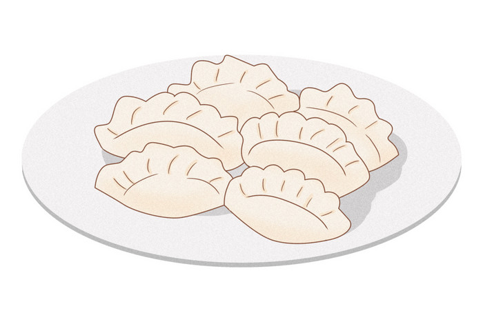

When I was three years old, my parents packed everything they had into whatever could fit and left Shanghai, China. I don't have any particularly vivid memories of the airport nor the plane. I do remember—however—the version of the story I've been told my whole life, repeated at dinner tables and in moments when my parents believed I was old enough to understand: We came for a better life.
I used to merely take that answer at face value. "A better life" sounded straightforward, like a mathematical equation: simply give up one thing to gain another. But as I got older and older, I began to realize what the phrase was leaving out. What exactly did they give up? And is the life they got actually better — or just different?
My brother was born in San Francisco in 2015, two years after our arrival. America is the only home he has ever known. He lacks the memory that I didn't have: the blank space where a childhood in the neighborhoods of Shanghai might have lived. Moving to America at age three, I existed in a strange in-between — old enough that somewhere inside of me remained the faint ghost of a different life, yet young enough that I cannot remember that life anymore. Although my parents know exactly what they left behind, they just tend not to talk about it.
The American Dream does not advertise its true cost — and in chasing it, immigrant families are forced to leave behind not just a place, but a self.
Author Amy Tan understood this bargain because at its core, The Joy Luck Club is a book about the weight that is passed down from mother to daughter across the ocean of immigration—things that get lost in translation and the things that are lost on purpose. In a devastating moment in the novel, Jing-mei Woo sits across from her mother Suyuan's oldest friend after Suyuan has died, and she realizes she cannot answer the simplest question of who her mother truly was. Jing-mei's inability is not solely grief — it reveals that Suyuan had been so consumed by the act of surviving and building a life in America that the person she was before never made it across the ocean with her.
The woman her daughter faced across the dinner table was already a "translated" version, reshaped by a country that didn't know her original language, her losses, or her original self. Through this, Tan demonstrates that sacrifice is not always material. In addition to leaving China, Suyuan also left a version of herself that her own daughter never met.
裂隙之间 · Living in the gap between who we were and who we became
The ambitions Suyuan poured into Jing-mei — the relentless hope that her daughter could be exceptional — were more than pressure. They were a way of keeping something alive that had nowhere else to go: Suyuan's own dreams. Suyuan had lost two daughters in China before she even arrived in America, and every hope she placed onto her surviving daughter carried the weight of that grief.
I think a lot about my own mother doing a version of this. But instead of forcing hours of piano lessons on me, it is the silence she keeps about her life before America that reminds me of Suyuan. She has friends back in China she hasn't spoken to in years — not because of falling out, but because maintaining those relationships required time and energy that went instead towards raising my brother and me in a foreign country.
My mother didn't learn English because she wanted to, but because she had to. To communicate with her children's teachers. To communicate with the people of this foreign land. Every English word she learned was both a gain and a small surrender.
"For unlike my mother, I did not believe I could be anything I wanted to be. I could only be me."
Jing-mei Woo · The Joy Luck Club
What Jing-mei names as limitation — only being herself — is actually what her mother's dream never made room for. Suyuan's hope was so total, so American in its belief that identity is something you build from scratch, that it left no space for a daughter who simply wanted to exist without becoming exceptional. Our parents believed in the Dream hard enough to give up nearly everything for it — and we may have inherited the life they built, but not the dream that built it.
My parents came to this country not speaking an ounce of English, not knowing anyone in this foreign land, and leaving countless loved ones behind in China. They essentially left their entire life behind because they believed the math would work out — that whatever they'd gain here would exceed what they had lost in choosing to leave. I also don't think they knew, standing at that departure gate thirteen years ago, that some of what they were leaving they'd never fully recover.
Not the material things. But the ease of being entirely yourself in a place that already knows who you are.
Tan ends the novel with Jing-mei traveling to China to meet the sisters her mother had lost prior to coming to America. Standing before them, she finally sees her mother's face reflected back. For the first time, she recognizes the distance between who her mother was and who she became — and that she had been unknowingly living that distance her entire life. It took traveling back to the country her mother fled to finally see her clearly. Which means the cost of the American Dream wasn't just what Suyuan left behind, but what Jing-mei could never access from inside it.

The dumplings taste the same but the memory of how to make them belongs to someone else
"Snack Dumpling Cartoon Illustration" by Qianku · Pikbest
My parents came for a better life and I believe them when they say they got one. But I've started to think the American Dream doesn't tell you what it will quietly take in exchange. It doesn't take money nor comfort, but the version of yourself that existed before. My mother still makes dumplings the way her mother taught her — with the same folds and fillings — but there is no one here who remembers learning it the same way she does.
Each generation inherits the distance: between who my parents were and who America asked them to become, between who I am and who I might have been, between my brother and a homeland he has never known. I believe that we are all living inside that gap, just at different depths.
I am grateful for everything this country gave my family. But I am also still learning to grieve the things it asked them to leave at the door — things they never got back, and things I never got to know.